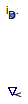

Table of Contents
- User's Guide
- BCs
- Sensors
- Assemblies
- Regions
- Subregions
- Connectors
- Characteristics
- Units
- Quantities
- BaseClasses
Download
- Latest: FCSys-2.0.zip (**Please check back soon or contact kdavies4 at gmail.com.)

| Name | Description |
|---|---|
| PartialSensor | Partial model for a sensor |

| Type | Name | Default | Description |
|---|---|---|---|
| Integer | n_lin | 1 | Number of components of linear momentum (nlin) |
| Type | Name | Description |
|---|---|---|
| output RealOutput | y | Measurement |
| InertDalton | inert | Connector for linear momentum and heat, with additivity of pressure |
partial model PartialSensor "Partial model for a sensor" extends FCSys.Sensors.BaseClasses.PartialSensor; parameter Integer n_lin( final min=0, final max=3) = 1 "Number of components of linear momentum (nlin)";FCSys.Connectors.InertDalton inert(final n_lin=n_lin) "Connector for linear momentum and heat, with additivity of pressure"; equation // Conservation (no storage) 0 = inert.p "No (additional) pressure"; zeros(n_lin) = inert.mPhidot "No force"; 0 = inert.Qdot "Adiabatic";end PartialSensor;